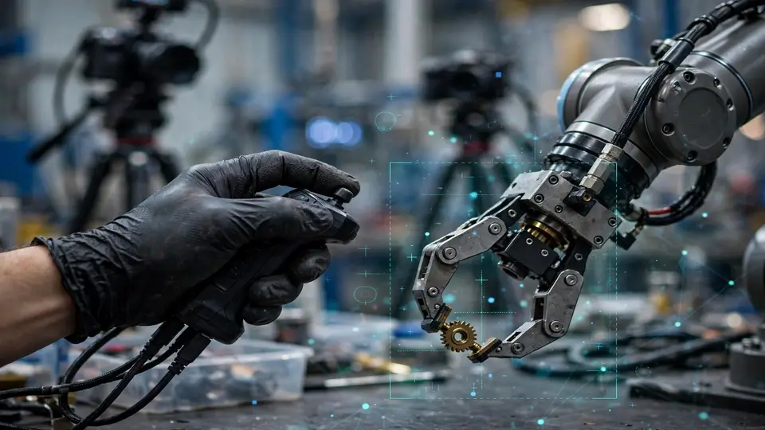
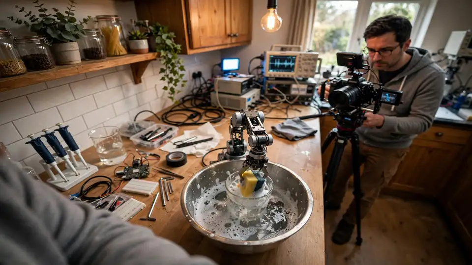

Nearly $48B into robotics in 2026 — and the money is going to filming humans wash dishes
Robotics and physical-AI startups have raised nearly $48B this year, per PitchBook data cited by the FT — and a growing share of it is going not to chips or models but to filming humans do ordinary work. The industry's scarcest resource isn't compute anymore; it's footage of hands folding laundry.
- Robotics and physical-AI companies have raised nearly $48B in 2026 so far, per PitchBook data cited by the Financial Times in a report out today.
- A growing share goes to data, not chips or models: labs including Physical Intelligence, Skild AI, NEURA Robotics and Generalist mix outside data vendors with internal operations to capture movement, contact and force in real settings.
- Collection methods: 'robot gyms' where workers use bimanual robotic arms, recording equipment sent into homes, offices, factories and even holiday rentals to film everyday tasks like folding laundry, loading trays, opening drawers.
- NEURA Robotics calls high-quality real-world training data 'Physical AI's scarcest resource' and is building a network of NEURA Gyms with RWTH Aachen University and TU Munich, aiming for five locations across Europe, the US and China by end of 2026.
- A new data-collection labor market: Scale AI and XDOF are expanding robotics data collection into lower-cost markets like Mexico and Asia (operator pay ~half the US rate); startup Mecka raised $60M this week (Nvidia, Sequoia) for robot-training data; Figure reports ~44,000 active users recording tasks at home and work, planning to spend $1B+ over 12 months on training-data services and compute.
- Simulation isn't enough: NVIDIA Isaac Sim and MuJoCo remain critical but suffer a persistent 'reality gap' — simulated cloth, wet plates and uneven floors don't behave like physical objects, and a real-world motor policy can't fail the way a chatbot can.
Robotics and physical-AI companies have raised nearly $48 billion so far in 2026, according to PitchBook data cited by the Financial Times in a report out today. But the striking part isn't the size of the number — it's where a growing share of it is going. Not chips, not bigger models, but footage of humans doing ordinary work: folding laundry, loading trays, opening drawers.
Text and images could be scraped off the internet for free. Workaday manipulation video could not — it doesn't exist in the wild. So the industry is commissioning it, frame by frame, and the bill is landing in the billions.
The data hunt
The FT reports that labs including Physical Intelligence, Skild AI, NEURA Robotics and Generalist are mixing outside data vendors with their own internal operations to feed their models. The methods read more like a documentary shoot than a software project: teams are gathering footage inside "robot gyms" where workers use bimanual robotic arms to perform tasks, and sending recording equipment into homes, offices and factories — and, in some programs, holiday rentals — to film people carrying out everyday work. The goal is to capture movement, contact and force in the settings robots will eventually have to handle themselves.

NEURA Robotics has called high-quality real-world training data "Physical AI's scarcest resource." The company is building a network of NEURA Gyms with partners including RWTH Aachen University and the Technical University of Munich, aiming for five locations across Europe, the United States and China to be operational by the end of 2026.
A labor market, not just a software market
What's forming around this demand is a new layer of the industry: robotics data-collection companies. Scale AI and XDOF are expanding robotics data collection into lower-cost markets like Mexico and Asia, where operator pay runs about half the U.S. rate. Humans wear sensors, teleoperate robot arms, repeat mundane tasks, label mistakes and create demonstrations — a job description that barely existed two years ago.
The capital is following. Startup Mecka says it raised $60 million this week from investors including Nvidia and Sequoia to produce robot-training data, and Figure reports about 44,000 active users recording tasks at home and at work — part of a plan to spend more than $1 billion over 12 months on services and computing power tied to training data.
"There is no equivalent of the internet for robotics developers to download a large training corpus from," said Joe Fox Jr, director of robotics operations at Scale AI. That sentence is the whole thesis: where LLMs had the web, physical AI has to film the world itself.

Why the simulation shortcut keeps falling short
It's not for lack of cheaper alternatives. Simulation systems like NVIDIA Isaac Sim and MuJoCo remain critical — virtual environments generate enormous numbers of trials cheaply and safely. But there's a persistent "reality gap": a simulated cloth, wet plate or uneven floor doesn't behave exactly like the physical object, and a policy that controls motors in the real world can't fail the way a chatbot can.
Cheaper infrastructure is helping on the margins: AWS this week open-sourced a physical-AI toolchain with sample cost estimates — a GR00T smoke-test training run at about $2, a full example run around $79, a DreamZero 1,000-step fine-tune near $93, and a full OSMO deployment around $5 per hour. Useful for smaller teams, but it doesn't solve the data problem; it just makes the data problem cheaper to process.
What this means
The FT's framing is that the data gap — not the hardware, not the model — is now the sector's binding constraint. $48 billion is a staggering amount of money to chase videos of dishwashers being emptied. It's also the most honest signal of where the technology actually is: the models can reason; what they can't do is borrow experience they were never given. Until robots have lived a million human days, someone has to film them first.
Frequently asked questions
How much has robotics raised in 2026, and where is the money going?
Nearly $48 billion so far in 2026, per PitchBook data cited by the Financial Times. The striking part: a growing share goes not to chips or bigger models but to filming humans do ordinary work — folding laundry, loading trays, opening drawers — because workaday manipulation video doesn't exist in the wild to scrape.
Why can't labs just simulate the data?
Simulation systems like NVIDIA Isaac Sim and MuJoCo remain critical, generating enormous cheap trials, but there's a persistent 'reality gap': a simulated cloth, wet plate or uneven floor doesn't behave exactly like the physical object, and a policy that controls motors in the real world can't fail the way a chatbot can.
Who is collecting real-world robotics data?
Labs like Physical Intelligence, Skild AI, NEURA Robotics and Generalist mix outside vendors with internal ops; NEURA is building NEURA Gyms (five locations targeted across Europe, the US and China by end of 2026); Scale AI and XDOF expand into lower-cost markets like Mexico and Asia; startup Mecka just raised $60M (Nvidia, Sequoia) to produce robot-training data; and Figure reports ~44,000 users recording everyday tasks at home and work.
What is the thesis in one sentence?
As Scale AI's director of robotics operations Joe Fox Jr put it: 'There is no equivalent of the internet for robotics developers to download a large training corpus from.' Where LLMs had the web, physical AI has to film the world itself — movement, contact and force, in the settings robots will eventually handle.